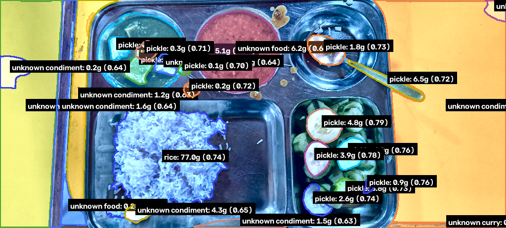

{
"resolution": "4080x1840",
"channels": 3,
"dtype": "uint8",
"expected_items": [
"rice",
"dal tadka"
],
"plate_profile": null,
"debug": false
}
{
"food_items": [
{
"name": "unknown condiment",
"volume_ml": 8.2,
"mass_g": 8.2,
"calories": 8.2,
"protein": 0.2,
"carbs": 1.2,
"fat": 0.2,
"confidence": 0.6321,
"class_label": "unknown condiment",
"class_confidence": 0.3221,
"top_k": [
{
"label": "pickle",
"confidence": 0.26,
"raw_similarity": 0.0312
},
{
"label": "banana",
"confidence": 0.2517,
"raw_similarity": 0.0378
},
{
"label": "dal",
"confidence": 0.2451,
"raw_similarity": 0.0244
},
{
"label": "apple",
"confidence": 0.2432,
"raw_similarity": 0.0335
}
],
"identification_status": "uncertain",
"menu_match": false,
"matched_menu_item": null,
"identification_confidence": 0.3221,
"segmentation_confidence": 0.9438,
"association_confidence": 0.0,
"menu_match_confidence": 0.0,
"depth_confidence": 0.75,
"scale_confidence": 0.7
},
{
"name": "unknown food",
"volume_ml": 4.1,
"mass_g": 4.1,
"calories": 4.1,
"protein": 0.1,
"carbs": 0.6,
"fat": 0.1,
"confidence": 0.6481,
"class_label": "unknown food",
"class_confidence": 0.3407,
"top_k": [
{
"label": "banana",
"confidence": 0.2562,
"raw_similarity": 0.0298
},
{
"label": "rice",
"confidence": 0.2508,
"raw_similarity": 0.0202
},
{
"label": "apple",
"confidence": 0.2504,
"raw_similarity": 0.0269
},
{
"label": "apple slices",
"confidence": 0.2426,
"raw_similarity": 0.023
}
],
"identification_status": "uncertain",
"menu_match": false,
"matched_menu_item": null,
"identification_confid[
{
"step": "Input",
"message": "Original image saved",
"params": {
"resolution": "4080x1840"
},
"elapsed_s": 0.3347,
"input_file": null,
"output_file": "original.png",
"timestamp": "2026-11-01T17:22:23.832975"
},
{
"step": "Pipeline",
"message": "Step 1 — Preprocessing & Perspective Warp",
"params": {},
"elapsed_s": null,
"input_file": null,
"output_file": null,
"timestamp": "2026-11-01T17:22:23.833125"
},
{
"step": "Quality Gate",
"message": "PASS",
"params": {
"blur_score": 111.85,
"tilt_deg": 3.0
},
"elapsed_s": null,
"input_file": null,
"output_file": null,
"timestamp": "2026-11-01T17:22:24.020970"
},
{
"step": "Preprocessing",
"message": "Complete",
"params": {
"output_size": "1024x461"
},
"elapsed_s": 0.2127,
"input_file": null,
"output_file": null,
"timestamp": "2026-11-01T17:22:24.045883"
},
{
"step": "Pipeline",
"message": "Step 2 — Compartments & Scale",
"params": {},
"elapsed_s": null,
"input_file": null,
"output_file": null,
"timestamp": "2026-11-01T17:22:24.046079"
},
{
"step": "Scale Calibration",
"message": "Fallback to bbox-based calibration",
"params": {
"cm_per_pixel": 0.04469,
"method": "bbox"
},
"elapsed_s": null,
"input_file": null,
"output_file": null,
"timestamp": "2026-11-01T17:22:24.054572"
},
{
"step": "Compartment Detection",
"message": "Scale computed",
"params": {
"cm_per_pixel": 0.04469,
"pixel_area_cm2": 0.00199746,
"compartments": 0,
"scale_confidence": 0.7
},
"elapsed_s": 0.0076,
"input_file": null,
"output_file": null,
"timestamp": "2026-11-01T17:22:24.054742"
},
{
"step": "Pipeline",
"message": "Step 3 — Depth Estimation",
"params": {},
"elapsed_s": null,
"input_file": null,
"output_file": null,
"| Step | Message | Params | Time |
|---|---|---|---|
| Input | Original image saved | {"resolution": "4080x1840"} | 0.3347s |
| Pipeline | Step 1 — Preprocessing & Perspective Warp | — | — |
| Quality Gate | PASS | {"blur_score": 111.85, "tilt_deg": 3.0} | — |
| Preprocessing | Complete | {"output_size": "1024x461"} | 0.2127s |
| Pipeline | Step 2 — Compartments & Scale | — | — |
| Scale Calibration | Fallback to bbox-based calibration | {"cm_per_pixel": 0.04469, "method": "bbox"} | — |
| Compartment Detection | Scale computed | {"cm_per_pixel": 0.04469, "pixel_area_cm2": 0.00199746, "compartments": 0, "scale_confidence": 0.7} | 0.0076s |
| Pipeline | Step 3 — Depth Estimation | — | — |
| Depth Estimation | Complete | — | 1.3757s |
| Pipeline | Step 4–6 — Open-World Discovery, SAM Segmentation & Verification | — | — |
| OpenVocab | Identified 27 food items (1 recognized, 13 unlisted, 13 uncertain) | — | 118.1637s |
| Pipeline | Step 7 — Volume & Mass Estimation | — | — |
| Volume Estimation | Computed mass for 27 items | {"total_items": 27} | 0.0625s |
| Pipeline | ✅ Pipeline complete | {"total_food_items": 27, "avg_confidence": 0.6911, "scale_method": "bbox"} | 120.3142s |